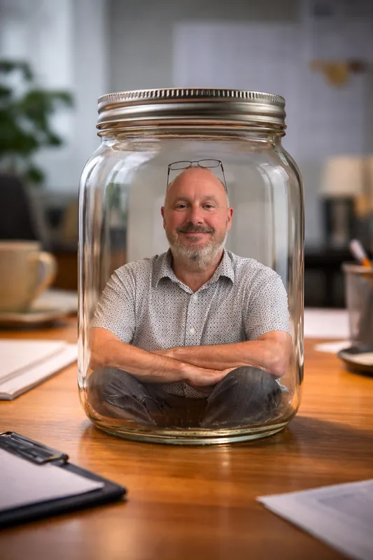
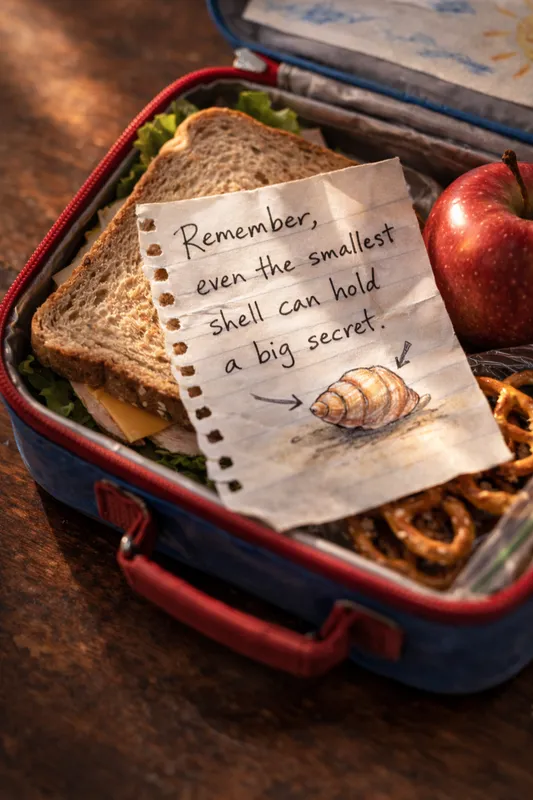
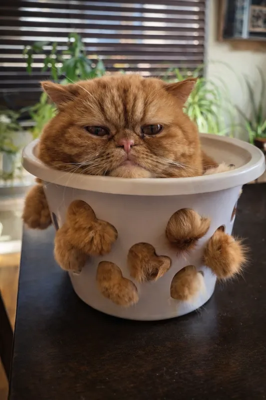

Part 1 — ending

But here’s the part they don’t tell you:
You’ve done this before.
Every shell you’ve ever had, you once thought you couldn’t leave.
And every shell you’ve ever left, you can barely remember now.
Some crabs never leave.
They call it their comfort zone.
But there’s nothing comfortable about a shell that no longer fits.
It’s just familiar.
Harold sat with that thought for a while.
The moon rose over the ocean.
The waves came in.
Harold leaned into the curve of his shell — a new curve, one he was still learning — and watched the stars.
He wasn’t squished anymore.
But he knew he would be again.
And that would mean he was still growing.
(Almost) THE END
This story started in my debottlenecking work with leaders and their teams.

The shell is a metaphor for the bottleneck — often the leader themselves, squished and holding everyone back without realising it.
I used it to explain bottleneck thinking to teams without sounding like a process wonk. It’s a kids’ story, after all.
Some people got it immediately.
Others would say “No… oh, wait…” and then go quiet.
The metaphor does a huge amount of heavy lifting, precisely because it’s so light.
Over time, I noticed something unexpected and delightful.
People started sharing it beyond work. With their children. With friends. With partners who’d gotten squished.

Many told me the timing was perfect — they were squished but hadn’t named it yet.
Back in the office: squished people lead to squished teams. Squished teams lead to squished organisations.

It’s shells within shells.
Bottlenecks within bottlenecks.
And it works the other way too — when one person moves to a bigger shell, they make room for everyone behind them. The whole system grows.
And sometimes the answer isn’t a bigger shell. It’s clearing out the one you’re in. Or finding a same-sized shell with a better view.
There’s comfort in realising that feeling squished is just part of growing. And moving to the next shell? It’s always easier than you imagined — once you’ve done it.
If you’d like to share this story, feel free — the address is unsquish.me
Tell them it’s free, it’s a five minute read, and it might be useful.
And — please say hello — clarke@clarkeching.com